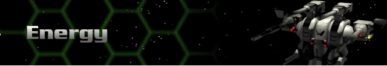

Legend:
Range – the maximum distance, in hexes, over which the weapon can fire.
Rounds – the number of times the weapon can fire per turn; note that some weapons fire bursts of shots with a single firing action.
Energy – total energy cost in battery or reactor power to fire the weapon once.
SDam – the total damage the weapon inflicts on the facing shield side of a target.
ADam – the total damage a weapon inflicts on the target’s armor if no shields are up.
Tech – the Technology Level at which the weapon is acquired.
Energy Weapons |
Description |
Range |
Rounds |
Energy |
SDam |
ADam |
Tech |
SE 400 Laser |
The Sierra Energy 400 is the smallest energy weapon carried on a Herc chassis. It has poor damage potential, but is cheap to install and maintain. |
10 |
1 |
20 |
50 |
10 |
0 |
SE 660 Laser |
This is the more powerful brother to the SE 400 and is a far more useful weapon. Both range and firepower are improved. |
15 |
1 |
27 |
75 |
15 |
0 |
SE1000 Laser Cannon |
The largest and most deadly of the standard lasers, the Sierra Energy 1000 can take down the shields of most Cybrids with just a few shots. |
20 |
1 |
36 |
120 |
24 |
1 |
Blast Mortar |
An energy weapon capable of firing indirectly to affect the shields of entire groups at once. |
15 |
1 |
15 |
75 |
15 |
1 |
SC 400 Compression Laser |
Sierra Combine Compression Laser technology uses magnetism to compress a light wave to amplify shock damage inflicted. The SC 400 is the smallest such weapon. |
10 |
1 |
18 |
50 |
20 |
2 |
SC 1000 Compression Laser |
Fully twice the size and power of the SC 400. This is, overall, one of the best energy weapons a Herc can carry. |
20 |
1 |
36 |
120 |
48 |
2 |
SCX Compression Laser |
This laser carries all of the shield-busting firepower of the EMP Cannon with the punch of a large missile. Expensive, but worth it. |
15 |
1 |
48 |
180 |
72 |
2 |
SP 500 Light Pulse Laser |
The third generation of laser technology, this is a rapid fire laser that improves on the earlier laser damage capability while delivering more shots. |
10 |
1 |
30 |
150 |
30 |
6 |
SP 750 Standard Pulse Laser |
A standard weapon on many Cybrids and Hercs. It is considered to be a superb balance of low cost and high energy. |
15 |
1 |
36 |
240 |
48 |
6 |
SP1200 Magna Pulse Laser |
The most devastating laser ever built, it is capable of defeating even the heaviest shielding with a burst of three shots. |
20 |
1 |
45 |
360 |
72 |
6 |
SE 700 Laser Gatling |
A rapid-fire version of the standard laser, that delivers a tremendous volume of deadly and accurate fire. |
18 |
4 |
10 |
64 |
12 |
7 |
SP 800 Pulse Laser Gatling |
A fast firing system, this weapon can absolutely devastate a unit by tearing through its shields to the armor below. |
10 |
2 |
24 |
160 |
40 |
8 |
Light Compression Blaster |
Combines the compression laser and fusion guns to render enemy shields almost useless. |
20 |
2 |
15 |
80 |
64 |
11 |
Heavy Compression Blaster |
The finest weapon ever made. Hercs equipped with the Heavy Compression Blaster can often lay waste to entire Cybrid squads…alone. |
20 |
2 |
25 |
160 |
128 |
11 |